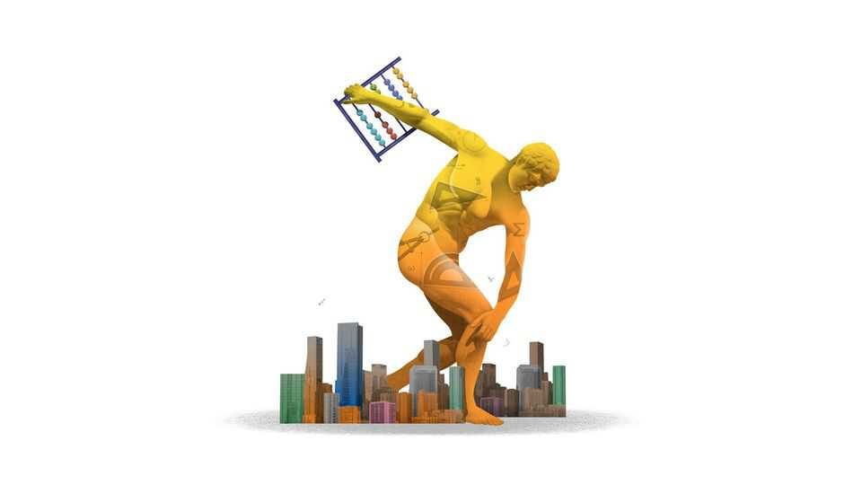

Olympiad Man has displaced Davos Man
How maths geeks became market gods

Sep 17th 2026
In Plato’s “Republic”, society comprises men of gold, who are fit to rule, men of silver, destined to be soldiers, and those of bronze, who become farmers. Since 1959 the world’s top teenage mathematicians (and, more recently, those of great ability in other fields) have tested their mettle in international competitions called Olympiads. Around 300 medals of gold, silver and bronze are awarded for maths annually. A smaller number are given for physics, chemistry and informatics (ie, computing). From the ranks of the winners has emerged an elite unlike any in the history of capitalism. Behold: Olympiad Man.
The crisis over the safety of artificial intelligence is best understood as a crisis among Olympiad Men. Last year AI models managed gold-medal performances in maths. Relentless advances since have led a pair of researchers at Anthropic, who made up a third of Britain’s maths Olympiad team in 2017, to resign. Anthropic’s boss, Dario Amodei, was once a member of the squad, but not quite the starting line-up, of America’s physics side. OpenAI has responded by appointing Paul Christiano to its board. Mr Christiano has a long history in AI safety and a silver medal for maths.
Davos Man cut his teeth at McKinsey in his 20s, but Olympiad Man was acing maths competitions before his first drink. (Olympiad Woman is far rarer.) Very clever children often become very, very expensive adults. In 2024 Google paid $2.7bn to hire Noam Shazeer, who achieved a perfect maths score in 1994. He recently decamped to OpenAI, whose head researcher has moonlighted as head coach of America’s informatics team. In the 2010s Sheryl Sandberg, the archetypal Davos Woman, was Meta’s best-paid executive; now it is probably Alexandr Wang, aged 29 and not long off America’s problem-set circuit. AI startups counting Olympiad Men among their founders include Databricks (worth $190bn), Cursor ($60bn), Cognition ($48bn) and Perplexity ($30bn).
Olympiad Man is just as comfortable in financial markets, where the broad shoulders of pit trading long ago gave way to the narrow ones that build algorithms to buy and sell at the speed of light. One of the founders of Two Sigma, a big trading firm, represented America in maths. Jane Street, another trading giant and one of Olympiad Man’s favourite employers, is even besting banks in corporate-bond trading, perhaps the last vestige of the Wall Street jock, and dabbles in venture capital (presumably in the startups of fellow Olympians). Cryptocurrency has plenty of illiterate spivs, but also numerate swots. The founder of the Ethereum blockchain took bronze in informatics; that of Hyperliquid, a big exchange, gold in physics.
Like their sporting namesakes, Olympiad victories are a worthy source of national pride. But the business of rearing and attracting Olympiad Men is also a source of national power and wealth. That was true when they mostly stayed in universities. It is doubly so now that many work for a living. They move in herds. The Massachusetts Institute of Technology is one magnet. Trinity College, Cambridge is another. (Both institutions are islands of excellence in towns obsessed with equality.) Deedy Das, an investor at Menlo Ventures, examined the maths, informatics and physics competitors of the past 25 years. Google employs the most. Meta is a distant second. As well as Jane Street, Jump Trading is a popular employer in finance.
There are good reasons to prefer Olympiad Man to Davos Man, the slick corporate executive who spent decades at home anywhere but nowadays feels welcome nowhere. How does one become a “Young Global Leader” at the World Economic Forum? God knows. How does one become an Olympiad Man and land a big job at an AI firm? You’re only ever two tests away, pal. The ability to audit one’s power has advantages in societies which are both contemptuous and envious of elites. It is, though, a great irony that the free market now awards its grandest prizes through a system designed by communists: the first Olympiad was held in the Soviet bloc; America started competing only in 1974.
Olympiad Man’s vision of globalisation is more attractive than Davos Man’s. According to Tolga Yuret, a Turkish economist, more than half of those who participated in Olympiads in the 2000s ended up living abroad. The West, and America in particular, is an enthusiastic importer of Olympiad talent, which might start life in Romania, China or India. Studying Olympiad Man is also a corrective to bad views on immigration. Does the left not wonder whether they should spend more time attracting Olympians rather than delivery drivers? Does the right not see the outstanding achievements of immigrants in its national teams? To look only at their names, and not their star-spangled ties, it would be easy to mistake America’s maths team for the Chinese one.
William F. Buckley once remarked that he would rather be governed by names drawn from a telephone directory than from a list of faculty at Harvard. What about a register of Olympiad Men? By necessity, elites are a class apart from their subjects. But Olympiad Man is truly abstracted from the world.
He has few employees to speak of and even fewer friends who do not share some version of his background. His rationalist philosophy would strike ordinary folk as a mark of insanity (AI labs and hedge funds are full of effective altruists). His language is unintelligible. Not because it is complicated—AI researchers talk, often glibly, about “p doom”, the probability that their technology ends the world—but because it is not believed. Investors think Olympiad Man a worrier. Politicians think him naive about global affairs. The populace is yet to fully comprehend Olympiad Man or his power. Until he can demonstrate virtue commensurate with his brilliance, Olympiad Man should want to keep it that way. ■